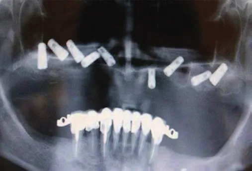
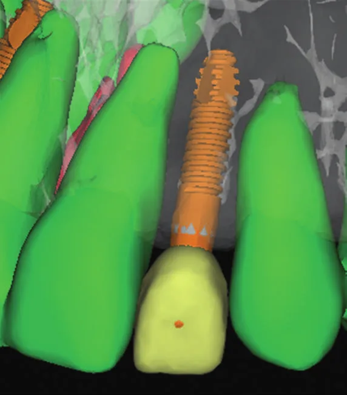

نسخه استخراجشده؛ ترجمه یا تأیید علمی انجام نشده است. وضعیت: captured
بیا با یک اعتراف صادقانه شروع کنیم: با وجود توجه روزافزون به ارزیابی کیفیت در ایمپلنتولوژی، هیچ اجماع پذیرفتهشدهای دربارهی اینکه عارضه را چگونه تعریف و کمّی کنیم وجود ندارد.
این یعنی وقتی مقالهای میخوانی که «نرخ عارضه ۵ درصد» گزارش میکند، اولین پرسشت باید این باشد: چه چیزی را عارضه شمردهاند؟
اما دو خانوادهی بزرگ روشناند:
۱. عوارض جراحی. پیامدهایشان را بیپرده بگوییم: شکست ایمپلنت، اختلال حس عصبی، عفونت، خونریزی قابلتوجه و حتی احتمال مرگ. این فهرست را جدی بگیر: ایمپلنت با همهی میزان موفقیت بالایش، درمانی بیعارضه نیست — حتی سالها پس از پایان کار.
۲. عوارض پروتزی. اینجا بیمار ترمیمی را که میخواست به دست نمیآورد — بهدلیل مشکلات عملکردی و زیبایی که ریشهشان در جایگذاری نامناسب ایمپلنت، تشخیص نادرست، یا نشناختن نیروهایی است که بر اجزای پروتز وارد میشود.
و یک مکانیسم که هر دو خانواده را به هم وصل میکند: دندانپزشکانی که در ابتدای منحنی یادگیریاند، تمایل دارند طرح درمانی بریزند که آنها را از پروسیجرهایی که در آن دانش یا راحتی ندارند معاف کند. نتیجه: ایمپلنت در نواحی غیربهینه گذاشته میشود، و از دل همان تصمیم، مشکلات زیبایی، پروتزی و جراحی بیرون میآید.
پیامدهای همین جایگذاریهای غیرایدهآل اینهاست: موقعیت غیرایدهآل ایمپلنت، اختلال حس عصبی، پروتز ایمپلنت غیرمعمول، پروفایل اِمرجنس ضعیف، مشکلات بیومکانیکی و شکستگی ایمپلنت.
نتیجهی مهم: عارضه معمولاً در اتاق عمل شروع نمیشود؛ در جلسهی طرح درمان شروع میشود — جایی که تصمیم گرفتی از چه کاری پرهیز کنی.

در همهی حوزههای مراقبت سلامت، درمانگران با بیمارانشان از فضیلت پیشگیری صحبت میکنند — و نکتهای که کل این ماژول بر آن بنا شده این است:
«به همان اندازه که پیشگیری از عوارض برای ایمپلنتولوژی اهمیت دارد، شناسایی و درمان سریع این رخدادها هم اهمیت دارد.»
یعنی دو مهارت جدا لازم داری، نه یکی: مهارت اینکه اتفاق نیفتد، و مهارت اینکه وقتی افتاد، زود ببینی و درست عمل کنی.
پایهی پیشگیری — ارزیابی جامع بیمار. ارزیابی دقیق بیمار، شالودهی تعیین ریسک جراحی، بیهوشی و پروتزی است و همین ریسک است که مستقیماً موربیدیتی و عوارض همراهش را تعیین میکند.
و یک قاعدهی عملی و بیاستثنا: هر پاسخ مثبت در پرسشنامهی پزشکی باید بررسی و از نظر خطر عوارض احتمالی برای جراحی ارزیابی شود. نه اینکه فقط علامت بخورد و رد شود.
گرفتن کلیرنس پزشکی، یک تصمیم حقوقی هم هست. بدان که نگرفتن این کلیرنسها، دندانپزشک ایمپلنت را در صورت بروز عارضه در ریسک جدی مدیکولگال قرار میدهد. در کنارش رضایت آگاهانهی جامع دربارهی عوارض ممکن لازم است.
آخرین لایه — پیگیری. پیگیری قوی، آخرین جزء پیشگیری از عوارض است. یک پروتکل پیگیری خوب دو کار میکند: پیوند محکمی با بیمار میسازد، و فرصت شناسایی و پاسخ سریع به عوارض متعدد میدهد.
در ارزیابیهای پس از عمل چه چیزی را میبینی؟ فهرستش این است: روند ترمیم، فیت پروتز موقت، بسته بودن خط برش، وجود عفونت، و وضعیت فاز پس از پروتز.
و یک تصویر که ارزش نگهداشتن دارد: تمام این شرایط باید پیش از شروع درمان پیشبینی شوند و برنامهای از قبل آماده باشد تا بتوان «سطح شیبدار لغزنده»ای را که این عوارض میسازند، ایمن پیمود.
